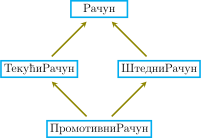

<!DOCTYPE html>
<html xmlns="http://www.w3.org/1999/xhtml" lang="sr"></html>
  <head>
    <meta charset="utf-8" />
    <meta name="viewport" content="width=device-width, initial-scale=1.0" />
<title>Објектно-оријентисано програмирање &#8212; Компоновање рачунарских програма</title>
    <link rel="stylesheet" href="../_static/pygments.css" type="text/css" />
    <link rel="stylesheet" href="../_static/basic.css" type="text/css" />
    <link rel="stylesheet" type="text/css" href="../_static/fitb.css" />
    <link rel="stylesheet" type="text/css" href="../_static/parsons.css" />
    <link rel="stylesheet" type="text/css" href="../_static/lib/prettify.css" />
    <link rel="stylesheet" type="text/css" href="../_static/showEval.css" />
    <link rel="stylesheet" type="text/css" href="../_static/activecode.css" />
    <link rel="stylesheet" type="text/css" href="../_static/codemirror.css" />
    <link rel="stylesheet" type="text/css" href="../_static/matrixeq.css" />
    <link rel="stylesheet" type="text/css" href="../_static/pytutor.css" />
    <link rel="stylesheet" type="text/css" href="../_static/modal-basic.css" />
    <link rel="stylesheet" type="text/css" href="../_static/datafile.css" />
    <link rel="stylesheet" type="text/css" href="../_static/webgldemo.css" />
    <link rel="stylesheet" type="text/css" href="../_static/webglinteractive.css" />
    <link rel="stylesheet" type="text/css" href="https://stackpath.bootstrapcdn.com/bootstrap/4.2.1/css/bootstrap.min.css" />
    <link rel="stylesheet" type="text/css" href="../_static/video.css" />
    <link rel="stylesheet" type="text/css" href="../_static/dragndrop.css" />
    <link rel="stylesheet" type="text/css" href="../_static/poll.css" />
    <link rel="stylesheet" type="text/css" href="../_static/clickable.css" />
    <link rel="stylesheet" type="text/css" href="../_static/tabbedstuff.css" />
    <link rel="stylesheet" type="text/css" href="../_static/karel.css" />
    <link rel="stylesheet" type="text/css" href="../_static/notes.css" />
    <link rel="stylesheet" type="text/css" href="../_static/simanim.css" />
    <link rel="stylesheet" type="text/css" href="../_static/pycode.css" />
    <link rel="stylesheet" type="text/css" href="../_static/p5js.css" />
    <link rel="stylesheet" type="text/css" href="../_static/gallery.css" />
    <link rel="stylesheet" type="text/css" href="../_static/dbDirective.css" />
    <link rel="stylesheet" href="../_static/user-highlights.css" type="text/css" />
    <link rel="stylesheet" href="https://use.fontawesome.com/releases/v5.1.1/css/all.css" type="text/css" />
    <link rel="stylesheet" href="../_static/bootstrap-4.0.0-dist/css/bootstrap.min.css" type="text/css" />
    <link rel="stylesheet" href="../_static/flatly.min.css" type="text/css" />
    <link rel="stylesheet" href="../_static/petlja-runestone.css" type="text/css" />
    <link rel="stylesheet" href="../_staticnbstyle.css" type="text/css" />
    <script id="documentation_options" data-url_root="../" src="../_static/documentation_options.js"></script>
    <script type="text/javascript" src="../_static/runestonebase.js"></script>
    <script type="text/javascript" src="../_static/skulpt-stdlib.js"></script>
    <script type="text/javascript" src="../_static/skulpt.min.js"></script>
    <script type="text/javascript" src="../_static/jquery.js"></script>
    <script type="text/javascript" src="../_static/underscore.js"></script>
    <script type="text/javascript" src="../_static/doctools.js"></script>
    <script type="text/javascript" src="../_static/language_data.js"></script>
    <script type="text/javascript" src="../_static/fitb.js"></script>
    <script type="text/javascript" src="../_static/timedfitb.js"></script>
    <script type="text/javascript" src="../_static/jquery_i18n/CLDRPluralRuleParser.js"></script>
    <script type="text/javascript" src="../_static/jquery_i18n/jquery.i18n.js"></script>
    <script type="text/javascript" src="../_static/jquery_i18n/jquery.i18n.messagestore.js"></script>
    <script type="text/javascript" src="../_static/jquery_i18n/jquery.i18n.fallbacks.js"></script>
    <script type="text/javascript" src="../_static/jquery_i18n/jquery.i18n.language.js"></script>
    <script type="text/javascript" src="../_static/jquery_i18n/jquery.i18n.parser.js"></script>
    <script type="text/javascript" src="../_static/jquery_i18n/jquery.i18n.emitter.js"></script>
    <script type="text/javascript" src="../_static/jquery_i18n/jquery.i18n.emitter.bidi.js"></script>
    <script type="text/javascript" src="../_static/fitb-i18n.en.js"></script>
    <script type="text/javascript" src="../_static/fitb-i18n.sr.js"></script>
    <script type="text/javascript" src="../_static/lib/prettify.js"></script>
    <script type="text/javascript" src="../_static/lib/hammer.min.js"></script>
    <script type="text/javascript" src="../_static/parsons.js"></script>
    <script type="text/javascript" src="../_static/parsons-i18n.en.js"></script>
    <script type="text/javascript" src="../_static/parsons-i18n.sr.js"></script>
    <script type="text/javascript" src="../_static/timedparsons.js"></script>
    <script type="text/javascript" src="../_static/showEval.js"></script>
    <script type="text/javascript" src="../_static/jquery.highlight.js"></script>
    <script type="text/javascript" src="../_static/bookfuncs.js"></script>
    <script type="text/javascript" src="../_static/codemirror.js"></script>
    <script type="text/javascript" src="../_static/xml.js"></script>
    <script type="text/javascript" src="../_static/css.js"></script>
    <script type="text/javascript" src="../_static/python.js"></script>
    <script type="text/javascript" src="../_static/htmlmixed.js"></script>
    <script type="text/javascript" src="../_static/javascript.js"></script>
    <script type="text/javascript" src="../_static/activecode-i18n.en.js"></script>
    <script type="text/javascript" src="../_static/activecode-i18n.sr.js"></script>
    <script type="text/javascript" src="../_static/activecode.js"></script>
    <script type="text/javascript" src="../_static/clike.js"></script>
    <script type="text/javascript" src="../_static/timed_activecode.js"></script>
    <script type="text/javascript" src="../_static/matrixeq.js"></script>
    <script type="text/javascript" src="../_static/reveal.js"></script>
    <script type="text/javascript" src="../_static/d3.v2.min.js"></script>
    <script type="text/javascript" src="../_static/jquery.ba-bbq.min.js"></script>
    <script type="text/javascript" src="../_static/jquery.jsPlumb-1.3.10-all-min.js"></script>
    <script type="text/javascript" src="../_static/pytutor.js"></script>
    <script type="text/javascript" src="../_static/codelens.js"></script>
    <script type="text/javascript" src="../_static/skulpt.min.js"></script>
    <script type="text/javascript" src="../_static/skulpt-stdlib.js"></script>
    <script type="text/javascript" src="../_static/datafile.js"></script>
    <script type="text/javascript" src="../_static/shortanswer.js"></script>
    <script type="text/javascript" src="../_static/timed_shortanswer.js"></script>
    <script type="text/javascript" src="../_static/animationbase.js"></script>
    <script type="text/javascript" src="../_static/webglinteractive.js"></script>
    <script type="text/javascript" src="../_static/FileSaver.min.js"></script>
    <script type="text/javascript" src="../_static/Blob.js"></script>
    <script type="text/javascript" src="../_static/runestonevideo.js"></script>
    <script type="text/javascript" src="../_static/dragndrop.js"></script>
    <script type="text/javascript" src="../_static/timeddnd.js"></script>
    <script type="text/javascript" src="../_static/dragndrop-i18n.en.js"></script>
    <script type="text/javascript" src="../_static/dragndrop-i18n.sr.js"></script>
    <script type="text/javascript" src="../_static/mchoice.js"></script>
    <script type="text/javascript" src="../_static/timedmc.js"></script>
    <script type="text/javascript" src="../_static/timed.js"></script>
    <script type="text/javascript" src="../_static/mchoice-i18n.en.js"></script>
    <script type="text/javascript" src="../_static/mchoice-i18n.sr.js"></script>
    <script type="text/javascript" src="../_static/poll.js"></script>
    <script type="text/javascript" src="../_static/clickable.js"></script>
    <script type="text/javascript" src="../_static/timedclickable.js"></script>
    <script type="text/javascript" src="../_static/tabbedstuff.js"></script>
    <script type="text/javascript" src="../_static/karelCorner.js"></script>
    <script type="text/javascript" src="../_static/karelRobot.js"></script>
    <script type="text/javascript" src="../_static/karelWorld.js"></script>
    <script type="text/javascript" src="../_static/karelRobotDrawer.js"></script>
    <script type="text/javascript" src="../_static/karelUI.js"></script>
    <script type="text/javascript" src="../_static/karel.js"></script>
    <script type="text/javascript" src="../_static/karel-i18n.en.js"></script>
    <script type="text/javascript" src="../_static/notes.js"></script>
    <script type="text/javascript" src="../_static/pygamelib-init.js"></script>
    <script type="text/javascript" src="../_static/blockly/blockly_compressed.js"></script>
    <script type="text/javascript" src="../_static/blockly/blocks_compressed.js"></script>
    <script type="text/javascript" src="../_static/blockly/python_compressed.js"></script>
    <script type="text/javascript" src="../_static/blockly/msg-sr.js"></script>
    <script type="text/javascript" src="../_static/blockpy/utilities.js"></script>
    <script type="text/javascript" src="../_static/blockpy/python_errors.js"></script>
    <script type="text/javascript" src="../_static/blockpy/ast_node_visitor.js"></script>
    <script type="text/javascript" src="../_static/blockpy/abstract_interpreter.js"></script>
    <script type="text/javascript" src="../_static/blockpy/pytifa.js"></script>
    <script type="text/javascript" src="../_static/blockpy/abstract_interpreter_definitions.js"></script>
    <script type="text/javascript" src="../_static/blockpy/python_to_blockly.js"></script>
    <script type="text/javascript" src="../_static/blockpy/imported.js"></script>
    <script type="text/javascript" src="../_static/blockpy/blocks/class.js"></script>
    <script type="text/javascript" src="../_static/blockpy/blocks/comment.js"></script>
    <script type="text/javascript" src="../_static/blockpy/blocks/comprehensions.js"></script>
    <script type="text/javascript" src="../_static/blockpy/blocks/dict.js"></script>
    <script type="text/javascript" src="../_static/blockpy/blocks/if.js"></script>
    <script type="text/javascript" src="../_static/blockpy/blocks/io.js"></script>
    <script type="text/javascript" src="../_static/blockpy/blocks/lists.js"></script>
    <script type="text/javascript" src="../_static/blockpy/blocks/sets.js"></script>
    <script type="text/javascript" src="../_static/blockpy/blocks/loops.js"></script>
    <script type="text/javascript" src="../_static/blockpy/blocks/parking.js"></script>
    <script type="text/javascript" src="../_static/blockpy/blocks/tuple.js"></script>
    <script type="text/javascript" src="../_static/blockpy/blocks/turtles.js"></script>
    <script type="text/javascript" src="../_static/blockpy/blocks/text.js"></script>
    <script type="text/javascript" src="../_static/blockpy-modal.js"></script>
    <script type="text/javascript" src="../_static/simanim.js"></script>
    <script type="text/javascript" src="https://cdn.jsdelivr.net/pyodide/v0.16.1/full/pyodide.js"></script>
    <script type="text/javascript" src="../_static/pycode.js"></script>
    <script type="text/javascript" src="//toolness.github.io/p5.js-widget/p5-widget.js"></script>
    <script type="text/javascript" src="../_static/p5js.js"></script>
    <script type="text/javascript" src="../_static/gallery.js"></script>
    <script type="text/javascript" src="../_static/dbDirective.js"></script>
    <script type="text/javascript" src="../_static/sql.js"></script>
    <script type="text/javascript" src="../_static/copybutton.js"></script>
    <script type="text/javascript" src="../_static/translations.js"></script>
    <script async="async" type="text/javascript" src="https://cdnjs.cloudflare.com/ajax/libs/mathjax/2.7.5/latest.js?config=TeX-AMS-MML_HTMLorMML"></script>
    <script type="text/javascript" src="../_static/mchoice-i18n.sr-Cyrl.js"></script>
    <script type="text/javascript" src="../_static/mchoice-i18n.sr.js"></script>
    <script type="text/javascript" src="../_static/mchoice-i18n.sr-Latn.js"></script>
    <script type="text/javascript" src="../_static/dragndrop-i18n.sr-Cyrl.js"></script>
    <script type="text/javascript" src="../_static/dragndrop-i18n.sr.js"></script>
    <script type="text/javascript" src="../_static/dragndrop-i18n.sr-Latn.js"></script>
    <script type="text/javascript" src="../_static/fitb-i18n.sr-Cyrl.js"></script>
    <script type="text/javascript" src="../_static/fitb-i18n.sr.js"></script>
    <script type="text/javascript" src="../_static/fitb-i18n.sr-Latn.js"></script>
    <script type="text/javascript" src="../_static/parsons-i18n.sr-Cyrl.js"></script>
    <script type="text/javascript" src="../_static/parsons-i18n.sr.js"></script>
    <script type="text/javascript" src="../_static/parsons-i18n.sr-Latn.js"></script>
    <script type="text/javascript" src="../_static/activecode-i18n.sr-Cyrl.js"></script>
    <script type="text/javascript" src="../_static/activecode-i18n.sr.js"></script>
    <script type="text/javascript" src="../_static/activecode-i18n.sr-Latn.js"></script>
    <script type="text/javascript" src="../_static/jquery-ui-1.10.3.custom.min.js"></script>
    <script type="text/javascript" src="../_static/jquery-fix.js"></script>
    <script type="text/javascript" src="../_static/bootstrap-4.0.0-dist/js/bootstrap.min.js"></script>
    <script type="text/javascript" src="../_static/bootstrap-4.0.0-dist/js/bootstrap.bundle.min.js"></script>
    <script type="text/javascript" src="../_static/bootstrap-sphinx.js"></script>
    <script type="text/javascript" src="../_static/waypoints.min.js"></script>
    <script type="text/javascript" src="../_static/rangy-core.js"></script>
    <script type="text/javascript" src="../_static/rangy-textrange.js"></script>
    <script type="text/javascript" src="../_static/rangy-cssclassapplier.js"></script>
    <script type="text/javascript" src="../_static/user-highlights.js"></script>
    <script type="text/javascript" src="../_static/jquery.idle-timer.js"></script>
    <script type="text/javascript" src="../_static/processing-1.4.1.min.js"></script>
    <script type="text/javascript" src="../_static/jquery.hotkey.js"></script>
    <script type="text/javascript" src="../_static/jquery-migrate-1.2.1.min.js"></script>
    <script type="text/javascript" src="../_static/require.js"></script>
    <link rel="index" title="Index" href="../genindex.html" />
    <link rel="search" title="Search" href="../search.html" />
    <link rel="next" title="Имплементација класа и објеката" href="6-имплементација-класа-и-објеката.html" />
    <link rel="prev" title="Променљиви подаци" href="4-променљиви-подаци.html" />
<meta charset='utf-8'>
<meta http-equiv='X-UA-Compatible' content='IE=edge,chrome=1'>
<meta content='width=device-width, initial-scale=1.0, maximum-scale=1.0, user-scalable=0' name='viewport' />
<link rel="shortcut icon" href="../_static/favicon.ico" type="image/ico" />

<script type="text/javascript">
  eBookConfig = {};
  eBookConfig.host = 'http://127.0.0.1:8000' ? 'http://127.0.0.1:8000' : 'http://127.0.0.1:8000';
  eBookConfig.app = eBookConfig.host + '/runestone';
  eBookConfig.ajaxURL = eBookConfig.app + '/ajax/';
  eBookConfig.course = 'krp';
  eBookConfig.logLevel = '0';
  eBookConfig.loginRequired = 'false';
  eBookConfig.build_info = "";
  eBookConfig.isLoggedIn = false;
  eBookConfig.useRunestoneServices = 'false';
  eBookConfig.python3 = 'true';
  eBookConfig.basecourse = 'krp';
  eBookConfig.runestone_version = '';
  eBookConfig.imagesDir = '../_images/';
  eBookConfig.staticDir = '../_static/';
  if(typeof(Sk) != "undefined")
      Sk.imgPath = eBookConfig.imagesDir;
</script>

<div id="fb-root"></div>


  </head><body>


<!-- Begin navbar -->

<nav id="navbar" class="navbar navbar-default navbar-fixed-top" role="navigation">

  <div class="container">

    <div class="navbar-header">
      <button type="button" class="navbar-toggle collapsed" data-toggle="collapse" data-target="#bs-example-navbar-collapse-1">
        <span class="sr-only">Toggle navigation</span>
        <span class="icon-bar"></span>
        <span class="icon-bar"></span>
        <span class="icon-bar"></span>
      </button>
      
    </div>

    <div class="collapse navbar-collapse" id="bs-example-navbar-collapse-1" style="margin-top: 10px; margin-left: 25px;">
      <ul class="nav navbar-nav">
        <li class="active"><a href="../">Компоновање рачунарских програма</a></li>
      </ul>
    </div>
  </div>
</nav>


<div class="container col-md-12" id="continue-reading"></div>

<div class="container col-md-8 col-md-offset-2" id="main-content" style="margin-top: 70px;">
  
  <div class="section" id="object-orientedprogramming">
<span id="id1"></span><h1>Објектно-оријентисано програмирање<a class="headerlink" href="#object-orientedprogramming" title="Permalink to this headline">¶</a></h1>
<p>Објектно-оријентисано програмирање (ООП) је метода организације програма која обједињује многе идеје представљене у овом поглављу. Као и функције у апстракцији података, класе стварају апстракцијске баријере између употребе и имплементације података. Попут диспечерских речника, објекти одговарају на захтеве за одређеним радњама. Као променљиве структуре података, објекти поседују локално стање које није директно доступно из глобалног окружења. Пајтонов објектни систем пружа погодну синтаксу за промовисање употребе ових техника за организацију програма. Велики део ове синтаксе је заједнички и за многе друге објектно-оријентисане програмске језике.</p>
<p>Објектни систем нуди више од пуке погодности. Он омогућава нову метафору пројектовања програма у којима неколико независних агената комуницира унутар рачунара. Сваки објекат спаја локално стање и понашање на начин који апстракује њихове сложености. Објекти међусобно комуницирају, а корисни резултати израчунавају се као последица њихове интеракције. Објекти не само да прослеђују поруке, већ и деле понашање међу осталим објектима истог типа и наслеђују карактеристике и одлике сродних типова.</p>
<p>Парадигма објектно-оријентисаног програмирања има свој речник који пружа подршку објектној метафори. Већ је приказано да су објекти вредности податка које поседују методе и атрибуте, којима се приступа нотацијом преко тачке. Сваки објекат такође има и свој тип, који се назива <em>класа</em>. Да би се створили нови типови података, имплементирају се нове класе.</p>
<div class="section" id="objectsandclasses">
<span id="id2"></span><h2>Објекти и класе<a class="headerlink" href="#objectsandclasses" title="Permalink to this headline">¶</a></h2>
<p>Класа служи као шаблон за све објекте чији је тип баш та класа. Сваки објекат је инстанца неке одређене класе. Сви објекти који су до сада коришћени имају уграђене класе, али се такође могу стварати и нове кориснички дефинисане класе. Дефиниција класе наводи атрибуте и методе који су дељени и заједнички за све објекте те класе. Класе и одговарајуће наредбе биће представљене кроз још један осврт на пример банковног рачуна.</p>
<p>Приликом увођења локалног стања банковни рачуни су природно моделирани као променљиве вредности које имају своје <code class="docutils literal notranslate"><span class="pre">стање</span></code>. Објекат банковног рачуна треба да има методу <code class="docutils literal notranslate"><span class="pre">подигни</span></code> која ажурира стање на рачуну и враћа захтевани износ, ако је доступан. Да би се довршила и заокружила апстракција: банковни рачун би требало да може да врати своје тренутно <code class="docutils literal notranslate"><span class="pre">стање</span></code>, да врати име <code class="docutils literal notranslate"><span class="pre">власник</span></code>-а рачуна, као и да буде у могућности да се <code class="docutils literal notranslate"><span class="pre">депонуј</span></code>-е одређени износ.</p>
<p>Класа <code class="docutils literal notranslate"><span class="pre">Рачун</span></code> омогућава стварање више различитих инстанци банковних рачуна. Чин стварања нове инстанце објекта уобичајено се назива <em>инстанцирање</em> класе. Синтакса у Пајтону за инстанцирање класе идентична је синтакси за позивање функције. У овом конкретном случају, позива се <code class="docutils literal notranslate"><span class="pre">Рачун</span></code> са аргументом <code class="docutils literal notranslate"><span class="pre">'Барун'</span></code>, који представља име власника рачуна.</p>
<div class="highlight-default notranslate"><div class="highlight"><pre><span></span><span class="gp">&gt;&gt;&gt; </span><span class="n">р</span> <span class="o">=</span> <span class="n">Рачун</span><span class="p">(</span><span class="s1">&#39;Барун&#39;</span><span class="p">)</span> <span class="c1"># doctest: +SKIP</span>
</pre></div>
</div>
<p><em>Атрибут</em> објекта је пар име-вредност придружен том објекту, којем је могуће приступити нотацијом преко тачке. Атрибути који су посебни за одређени објекат, за разлику од свих објеката класе, називају се <em>атрибути инстанце</em>. Сваки <code class="docutils literal notranslate"><span class="pre">Рачун</span></code> има своје стање и име власника рачуна који су примери атрибута инстанце. У широј програмерској заједници, атрибути инстанце такође се често називају и <em>поља</em>, <em>својства</em> или пак <em>променљиве инстанце</em>.</p>
<div class="highlight-default notranslate"><div class="highlight"><pre><span></span><span class="gp">&gt;&gt;&gt; </span><span class="n">р</span><span class="o">.</span><span class="n">депонуј</span><span class="p">(</span><span class="mi">15</span><span class="p">)</span> <span class="c1"># doctest: +SKIP</span>
<span class="go">15</span>
</pre></div>
</div>
<p>Каже се да се методе <em>позивају</em> на одређеном објекту или над одређеним објектом. Као резултат позива методе <code class="docutils literal notranslate"><span class="pre">подигни</span></code>, подизање се одобрава и подигнути износ се скида са стања рачуна или се захтев одбија и метода враћа поруку о грешци.</p>
<div class="highlight-default notranslate"><div class="highlight"><pre><span></span><span class="gp">&gt;&gt;&gt; </span><span class="n">р</span><span class="o">.</span><span class="n">подигни</span><span class="p">(</span><span class="mi">10</span><span class="p">)</span>  <span class="c1"># Метода подигни враћа стање након подизања # doctest: +SKIP</span>
<span class="go">5</span>
<span class="gp">&gt;&gt;&gt; </span><span class="n">р</span><span class="o">.</span><span class="n">стање</span>        <span class="c1"># Атрибут стање је промењен # doctest: +SKIP</span>
<span class="go">5</span>
<span class="gp">&gt;&gt;&gt; </span><span class="n">р</span><span class="o">.</span><span class="n">подигни</span><span class="p">(</span><span class="mi">10</span><span class="p">)</span> <span class="c1"># doctest: +SKIP</span>
<span class="go">&#39;Недовољно средстава на рачуну.&#39;</span>
</pre></div>
</div>
<p>Као што је илустровано горе, понашање методе може зависити од промене атрибута објекта. Два идентична позива методи <code class="docutils literal notranslate"><span class="pre">подигни</span></code> са истим аргументом могу дати различите резултате.</p>
</div>
<div class="section" id="definingclasses">
<span id="id3"></span><h2>Дефинисање класа<a class="headerlink" href="#definingclasses" title="Permalink to this headline">¶</a></h2>
<p>Кориснички дефинисане класе праве се помоћу наредбе <code class="docutils literal notranslate"><span class="pre">class</span></code>, која се састоји из једне клаузуле. Наредба класе дефинише име класе, а затим укључује и пакет израза за дефинисање атрибута класе:</p>
<div class="highlight-default notranslate"><div class="highlight"><pre><span></span>class &lt;име&gt;:
    &lt;пакет&gt;
</pre></div>
</div>
<p>Када се изврши <code class="docutils literal notranslate"><span class="pre">class</span></code> наредба, нова класа се ствара и везује на <code class="docutils literal notranslate"><span class="pre">&lt;име&gt;</span></code> у првом оквиру тренутног окружења. Затим се извршава пакет наредби у телу класе. Било која имена повезана унутар <code class="docutils literal notranslate"><span class="pre">&lt;пакет&gt;</span></code> одељка у наредби <code class="docutils literal notranslate"><span class="pre">class</span></code>, било кроз <code class="docutils literal notranslate"><span class="pre">def</span></code> наредбу преко наредбе доделе, стварају или мењају атрибуте класе.</p>
<p>Класе су обично организоване у сврху манипулисања атрибутима инстанце, а то су парови име-вредност придружени свакој инстанци дате класе. Класа одређује атрибуте инстанце својих објеката дефинишући методу за иницијализацију нових објеката. На пример, део иницијализације објекта класе <code class="docutils literal notranslate"><span class="pre">Рачун</span></code> је додељивање почетног стања 0.</p>
<p>Одељак <code class="docutils literal notranslate"><span class="pre">&lt;пакет&gt;</span></code> у оквиру <code class="docutils literal notranslate"><span class="pre">class</span></code> наредбе садржи <code class="docutils literal notranslate"><span class="pre">def</span></code> наредбе које дефинишу нове методе за објекте те класе. Метода која иницијализује објекте има посебно име у Пајтону, <code class="docutils literal notranslate"><span class="pre">__init__</span></code> (две подвлаке са сваке стране речи „init”), и назива се <em>конструктор</em> те класе.</p>
<div class="highlight-default notranslate"><div class="highlight"><pre><span></span><span class="gp">&gt;&gt;&gt; </span><span class="k">class</span> <span class="nc">Рачун</span><span class="p">:</span>
<span class="gp">... </span>    <span class="k">def</span> <span class="fm">__init__</span><span class="p">(</span><span class="bp">self</span><span class="p">,</span> <span class="n">власникРачуна</span><span class="p">):</span>
<span class="gp">... </span>        <span class="bp">self</span><span class="o">.</span><span class="n">стање</span> <span class="o">=</span> <span class="mi">0</span>
<span class="gp">... </span>        <span class="bp">self</span><span class="o">.</span><span class="n">власник</span> <span class="o">=</span> <span class="n">власникРачуна</span>
</pre></div>
</div>
<p>Метода <code class="docutils literal notranslate"><span class="pre">__init__</span></code> за <code class="docutils literal notranslate"><span class="pre">Рачун</span></code> има два формална параметра. Први, <code class="docutils literal notranslate"><span class="pre">self</span></code>, везан је на новостворени објекат <code class="docutils literal notranslate"><span class="pre">Рачун</span></code>. Други параметар, <code class="docutils literal notranslate"><span class="pre">власникРачуна</span></code>, везан је за аргумент прослеђен у класи приликом позива за инстанцирање исте.</p>
<p>Конструктор повезује назив атрибута инстанце <code class="docutils literal notranslate"><span class="pre">стање</span></code> на 0. Такође, повезује назив атрибута <code class="docutils literal notranslate"><span class="pre">власник</span></code> на вредност под именом <code class="docutils literal notranslate"><span class="pre">власникРачуна</span></code>. Формални параметар <code class="docutils literal notranslate"><span class="pre">власникРачуна</span></code> је локално име у <code class="docutils literal notranslate"><span class="pre">__init__</span></code> методи. С друге стране, име <code class="docutils literal notranslate"><span class="pre">власник</span></code> које је повезано последњом наредбом доделе ће и даље наставити да постоји зато што се чува као атрибут <code class="docutils literal notranslate"><span class="pre">self</span></code>-а користећи се нотацијом преко тачке.</p>
<p>Након што је класа <code class="docutils literal notranslate"><span class="pre">Рачун</span></code> дефинисана, може се инстанцирати.</p>
<div class="highlight-default notranslate"><div class="highlight"><pre><span></span><span class="gp">&gt;&gt;&gt; </span><span class="n">р</span> <span class="o">=</span> <span class="n">Рачун</span><span class="p">(</span><span class="s1">&#39;Барун&#39;</span><span class="p">)</span>
</pre></div>
</div>
<p>Овај „позив” класи <code class="docutils literal notranslate"><span class="pre">Рачун</span></code> ствара нови објекат који је инстанца <code class="docutils literal notranslate"><span class="pre">Рачун</span></code>-а, а затим позива конструкторску функцију <code class="docutils literal notranslate"><span class="pre">__init__</span></code> са два аргумента: новоствореним објектом и ниском <code class="docutils literal notranslate"><span class="pre">'Барун'</span></code>. По договору, користи се име параметра <code class="docutils literal notranslate"><span class="pre">self</span></code> за први аргумент конструктора зато што је везан на објекат који се инстанцира. Ова конвенција је практично усвојена у готово свим Пајтон програмским кодовима.</p>
<p>Сада се може приступити пољима објекта <code class="docutils literal notranslate"><span class="pre">стање</span></code> и <code class="docutils literal notranslate"><span class="pre">власник</span></code> помоћу нотације преко тачке.</p>
<div class="highlight-default notranslate"><div class="highlight"><pre><span></span><span class="gp">&gt;&gt;&gt; </span><span class="n">р</span><span class="o">.</span><span class="n">стање</span>
<span class="go">0</span>
<span class="gp">&gt;&gt;&gt; </span><span class="n">р</span><span class="o">.</span><span class="n">власник</span>
<span class="go">&#39;Барун&#39;</span>
</pre></div>
</div>
<div class="section" id="identity">
<span id="id4"></span><h3>Идентитет<a class="headerlink" href="#identity" title="Permalink to this headline">¶</a></h3>
<p>Свака нова инстанца рачуна има свој атрибут <code class="docutils literal notranslate"><span class="pre">стање</span></code>, чија је вредност независна од других објеката исте класе.</p>
<div class="highlight-default notranslate"><div class="highlight"><pre><span></span><span class="gp">&gt;&gt;&gt; </span><span class="n">с</span> <span class="o">=</span> <span class="n">Рачун</span><span class="p">(</span><span class="s1">&#39;Влада&#39;</span><span class="p">)</span>
<span class="gp">&gt;&gt;&gt; </span><span class="n">с</span><span class="o">.</span><span class="n">стање</span> <span class="o">=</span> <span class="mi">200</span>
<span class="gp">&gt;&gt;&gt; </span><span class="p">[</span><span class="n">рач</span><span class="o">.</span><span class="n">стање</span> <span class="k">for</span> <span class="n">рач</span> <span class="ow">in</span> <span class="p">(</span><span class="n">р</span><span class="p">,</span> <span class="n">с</span><span class="p">)]</span>
<span class="go">[0, 200]</span>
</pre></div>
</div>
<p>Да би се наметнуло ово раздвајање, сваки објекат који је инстанца кориснички дефинисане класе има јединствени идентитет. Идентитет објекта се упоређује помоћу <code class="docutils literal notranslate"><span class="pre">is</span></code> и њему комплементарног <code class="docutils literal notranslate"><span class="pre">is</span> <span class="pre">not</span></code> оператора.</p>
<div class="highlight-default notranslate"><div class="highlight"><pre><span></span><span class="gp">&gt;&gt;&gt; </span><span class="n">р</span> <span class="ow">is</span> <span class="n">р</span>
<span class="go">True</span>
<span class="gp">&gt;&gt;&gt; </span><span class="n">р</span> <span class="ow">is</span> <span class="ow">not</span> <span class="n">с</span>
<span class="go">True</span>
</pre></div>
</div>
<p>Упркос томе што су направљени преко истоветних позива, објекти повезани на имена <code class="docutils literal notranslate"><span class="pre">р</span></code> и <code class="docutils literal notranslate"><span class="pre">с</span></code> нису исти. Као и обично, везивање објекта на ново име користећи се доделом не ствара нови објекат.</p>
<div class="highlight-default notranslate"><div class="highlight"><pre><span></span><span class="gp">&gt;&gt;&gt; </span><span class="n">т</span> <span class="o">=</span> <span class="n">р</span>
<span class="gp">&gt;&gt;&gt; </span><span class="n">т</span> <span class="ow">is</span> <span class="n">р</span>
<span class="go">True</span>
</pre></div>
</div>
<p>Нови објекти кориснички дефинисаних класа се стварају само када је класа (као што је <code class="docutils literal notranslate"><span class="pre">Рачун</span></code>) инстанцирана синтаксом позивног израза.</p>
</div>
<div class="section" id="methods">
<span id="id5"></span><h3>Методе<a class="headerlink" href="#methods" title="Permalink to this headline">¶</a></h3>
<p>Методе објекта су такође дефинисане <code class="docutils literal notranslate"><span class="pre">def</span></code> наредбом у пакету унутар <code class="docutils literal notranslate"><span class="pre">class</span></code> наредбе. У коду испод су и <code class="docutils literal notranslate"><span class="pre">депонуј</span></code> и <code class="docutils literal notranslate"><span class="pre">подигни</span></code> дефинисане као методе на објектима класе <code class="docutils literal notranslate"><span class="pre">Рачун</span></code>.</p>
<div class="highlight-default notranslate"><div class="highlight"><pre><span></span><span class="gp">&gt;&gt;&gt; </span><span class="k">class</span> <span class="nc">Рачун</span><span class="p">:</span>
<span class="gp">... </span>    <span class="k">def</span> <span class="fm">__init__</span><span class="p">(</span><span class="bp">self</span><span class="p">,</span> <span class="n">власникРачуна</span><span class="p">):</span>
<span class="gp">... </span>        <span class="bp">self</span><span class="o">.</span><span class="n">стање</span> <span class="o">=</span> <span class="mi">0</span>
<span class="gp">... </span>        <span class="bp">self</span><span class="o">.</span><span class="n">власник</span> <span class="o">=</span> <span class="n">власникРачуна</span>
<span class="gp">... </span>    <span class="k">def</span> <span class="nf">депонуј</span><span class="p">(</span><span class="bp">self</span><span class="p">,</span> <span class="n">износ</span><span class="p">):</span>
<span class="gp">... </span>        <span class="bp">self</span><span class="o">.</span><span class="n">стање</span> <span class="o">=</span> <span class="bp">self</span><span class="o">.</span><span class="n">стање</span> <span class="o">+</span> <span class="n">износ</span>
<span class="gp">... </span>        <span class="k">return</span> <span class="bp">self</span><span class="o">.</span><span class="n">стање</span>
<span class="gp">... </span>    <span class="k">def</span> <span class="nf">подигни</span><span class="p">(</span><span class="bp">self</span><span class="p">,</span> <span class="n">износ</span><span class="p">):</span>
<span class="gp">... </span>        <span class="k">if</span> <span class="n">износ</span> <span class="o">&gt;</span> <span class="bp">self</span><span class="o">.</span><span class="n">стање</span><span class="p">:</span>
<span class="gp">... </span>            <span class="k">return</span> <span class="s1">&#39;Недовољно средстава на рачуну.&#39;</span>
<span class="gp">... </span>        <span class="bp">self</span><span class="o">.</span><span class="n">стање</span> <span class="o">=</span> <span class="bp">self</span><span class="o">.</span><span class="n">стање</span> <span class="o">-</span> <span class="n">износ</span>
<span class="gp">... </span>        <span class="k">return</span> <span class="bp">self</span><span class="o">.</span><span class="n">стање</span>
</pre></div>
</div>
<p>Иако се дефиниције метода не разликују од дефиниција функција по начину на који су декларисане, дефиниције метода имају другачији ефекат када се извршавају. Функцијска вредност која се ствара <code class="docutils literal notranslate"><span class="pre">def</span></code> наредбом унутар <code class="docutils literal notranslate"><span class="pre">class</span></code> наредбе се везује на декларисано име, али је везана локално унутар класе као атрибут. Та вредност се позива као метода користећи се нотацијом преко тачке из инстанце класе.</p>
<p>Свака дефиниција методе изнова укључује посебан први параметар <code class="docutils literal notranslate"><span class="pre">self</span></code>, који је повезан за објекат над којим је метода позвана. На пример, може се рећи да је метода <code class="docutils literal notranslate"><span class="pre">депонуј</span></code> позвана над тачно одређеним <code class="docutils literal notranslate"><span class="pre">Рачун</span></code> објектом и прослеђује једну вредност аргумента: износ који треба депоновати. Сам објекат је везан на <code class="docutils literal notranslate"><span class="pre">self</span></code>, док је аргумент везан за <code class="docutils literal notranslate"><span class="pre">износ</span></code>. Све позване методе имају приступ објекту преко параметра <code class="docutils literal notranslate"><span class="pre">self</span></code> па тако могу приступити и манипулисати стањем објекта.</p>
<p>Да би се ове методе позвале, поново се користи нотација преко тачке, као што је илустровано у наставку.</p>
<div class="highlight-default notranslate"><div class="highlight"><pre><span></span><span class="gp">&gt;&gt;&gt; </span><span class="n">владинРачун</span> <span class="o">=</span> <span class="n">Рачун</span><span class="p">(</span><span class="s1">&#39;Влада&#39;</span><span class="p">)</span>
<span class="gp">&gt;&gt;&gt; </span><span class="n">владинРачун</span><span class="o">.</span><span class="n">депонуј</span><span class="p">(</span><span class="mi">100</span><span class="p">)</span>
<span class="go">100</span>
<span class="gp">&gt;&gt;&gt; </span><span class="n">владинРачун</span><span class="o">.</span><span class="n">подигни</span><span class="p">(</span><span class="mi">90</span><span class="p">)</span>
<span class="go">10</span>
<span class="gp">&gt;&gt;&gt; </span><span class="n">владинРачун</span><span class="o">.</span><span class="n">подигни</span><span class="p">(</span><span class="mi">90</span><span class="p">)</span>
<span class="go">&#39;Недовољно средстава на рачуну.&#39;</span>
<span class="gp">&gt;&gt;&gt; </span><span class="n">владинРачун</span><span class="o">.</span><span class="n">власник</span>
<span class="go">&#39;Влада&#39;</span>
</pre></div>
</div>
<p>Када се метода позове путем нотације преко тачке, сам објекат (повезан на <code class="docutils literal notranslate"><span class="pre">владинРачун</span></code> у овом конкретном случају) игра двоструку улогу. Прво, одређује шта значи име <code class="docutils literal notranslate"><span class="pre">подигни</span></code>, тачније да <code class="docutils literal notranslate"><span class="pre">подигни</span></code> није име из тренутног окружења, већ је то име које је локално за класу <code class="docutils literal notranslate"><span class="pre">Рачун</span></code>. Друго, везан је за први параметар <code class="docutils literal notranslate"><span class="pre">self</span></code> када је метода <code class="docutils literal notranslate"><span class="pre">подигни</span></code> позвана.</p>
</div>
</div>
<div class="section" id="messagepassinganddotexpressions">
<span id="id6"></span><h2>Прослеђивање порука и тачкасти изрази<a class="headerlink" href="#messagepassinganddotexpressions" title="Permalink to this headline">¶</a></h2>
<p>Методе, које су дефинисане у класама, као и атрибути инстанце, који се обично додељују у конструкторима, основни су елементи објектно-оријентисаног програмирања. Ова два концепта имитирају већи део понашања диспечерског речника у имплементацији преношења порука о вредности података. Објекти примају поруке у нотацији преко тачке, али уместо порука које су заправо произвољне ниске у виду кључева речника, у овом случају поруке су имена, односно називи локални за класу. Објекти такође имају именоване вредности локалних стања (атрибуте инстанце), али том стању се може приступити и њиме манипулисати помоћу нотације преко тачке, без потребе за коришћењем <code class="docutils literal notranslate"><span class="pre">nonlocal</span></code> наредби у самој имплементацији.</p>
<p>Главна идеја у преношењу порука била је да вредности података треба да се понашају тако што ће одговарати на поруке које су релевантне за апстрактни тип који представљају. Такозвани тачкасти запис или тачкаста нотација је синтаксна одлика Пајтона која формализује метафору преношења порука. Предност употребе програмског језика са уграђеним објектним системом је у томе што прослеђивање порука може неометано комуницирати са другим језичким елементима, као што су наредбе доделе. Не захтевају се различите поруке да би се „вратила” или „поставила” вредност повезана са именом локалног атрибута; синтакса језика омогућава директно коришћење имена поруке.</p>
<div class="section" id="dotexpressions">
<span id="id7"></span><h3>Тачкасти изрази<a class="headerlink" href="#dotexpressions" title="Permalink to this headline">¶</a></h3>
<p>Исечак кода <code class="docutils literal notranslate"><span class="pre">владинРачун.депонуј</span></code> назива се <em>тачкасти израз</em>. Тачкасти израз састоји се од израза, тачке и имена:</p>
<div class="highlight-default notranslate"><div class="highlight"><pre><span></span><span class="o">&lt;</span><span class="n">израз</span><span class="o">&gt;</span> <span class="o">.</span> <span class="o">&lt;</span><span class="n">име</span><span class="o">&gt;</span>
</pre></div>
</div>
<p>Иако <code class="docutils literal notranslate"><span class="pre">&lt;израз&gt;</span></code> може бити било који ваљани израз у Пајтону, <code class="docutils literal notranslate"><span class="pre">&lt;име&gt;</span></code> мора бити једноставно име (не и израз који се вреднује у име). Тачкасти израз се интерпретира у вредност атрибута под задатим називом <code class="docutils literal notranslate"><span class="pre">&lt;име&gt;</span></code>, за објекат који је вредност у коју се вреднује <code class="docutils literal notranslate"><span class="pre">&lt;израз&gt;</span></code>.</p>
<p>Уграђена функција <code class="docutils literal notranslate"><span class="pre">getattr</span></code> такође враћа атрибут за објекат по имену. То је ништа друго до функцијски еквивалент нотације преко тачке. Користећи <code class="docutils literal notranslate"><span class="pre">getattr</span></code>, могу се потражити атрибути помоћу ниске, као што је то чињено са диспечерским речницима.</p>
<div class="highlight-default notranslate"><div class="highlight"><pre><span></span><span class="gp">&gt;&gt;&gt; </span><span class="nb">getattr</span><span class="p">(</span><span class="n">владинРачун</span><span class="p">,</span> <span class="s1">&#39;стање&#39;</span><span class="p">)</span>
<span class="go">10</span>
</pre></div>
</div>
<p>Помоћу уграђене функције <code class="docutils literal notranslate"><span class="pre">hasattr</span></code> може се такође испитати да ли објекат поседује атрибут под одређеним именом.</p>
<div class="highlight-default notranslate"><div class="highlight"><pre><span></span><span class="gp">&gt;&gt;&gt; </span><span class="nb">hasattr</span><span class="p">(</span><span class="n">владинРачун</span><span class="p">,</span> <span class="s1">&#39;депонуј&#39;</span><span class="p">)</span>
<span class="go">True</span>
</pre></div>
</div>
<p>Атрибути објекта укључују све његове атрибуте инстанце, заједно са свим атрибутима (укључујући и методе) дефинисане у његовој класи. Методе су атрибути класе који захтевају посебно руковање.</p>
</div>
<div class="section" id="methodsandfunctions">
<span id="id8"></span><h3>Методе и функције<a class="headerlink" href="#methodsandfunctions" title="Permalink to this headline">¶</a></h3>
<p>Када се метода позове над објектом, тај објекат се имплицитно прослеђује као први аргумент методе. Другим речима, објекат који је вредност <code class="docutils literal notranslate"><span class="pre">&lt;израз&gt;</span></code>-а с леве стране тачке се аутоматски преноси као први аргумент методи именованој с десне стране тачкастог израза. Као резултат, објекат се везује на <code class="docutils literal notranslate"><span class="pre">self</span></code> параметар.</p>
<p>Да би се постигло аутоматско самоувезивање, Пајтон разликује <em>функције</em>, које су писане од самог почетка овог уџбеника, и <em>везане методе</em>, које повезују функцију и објекат над којим ће се та метода позивати. Вредност везане методе је већ придружена њеном првом аргументу, односно инстанци над којом је позвана, а која ће бити названа <code class="docutils literal notranslate"><span class="pre">self</span></code> када метода буде позвана.</p>
<p>У интерактивном Пајтоновом интерпретатору могу се уочити разлике приликом позива уграђене функције <code class="docutils literal notranslate"><span class="pre">type</span></code> са вредностима тачкастих израза као аргументима. Као атрибут класе, метода је само функција, али као атрибут инстанце, она је заправо везана метода.</p>
<div class="highlight-default notranslate"><div class="highlight"><pre><span></span><span class="gp">&gt;&gt;&gt; </span><span class="nb">type</span><span class="p">(</span><span class="n">Рачун</span><span class="o">.</span><span class="n">депонуј</span><span class="p">)</span>
<span class="go">&lt;class &#39;function&#39;&gt;</span>
<span class="gp">&gt;&gt;&gt; </span><span class="nb">type</span><span class="p">(</span><span class="n">владинРачун</span><span class="o">.</span><span class="n">депонуј</span><span class="p">)</span>
<span class="go">&lt;class &#39;method&#39;&gt;</span>
</pre></div>
</div>
<p>Ова два резултата разликују се само у чињеници да је први стандардна двоаргументна функција са параметрима <code class="docutils literal notranslate"><span class="pre">self</span></code> и <code class="docutils literal notranslate"><span class="pre">износ</span></code>. Друга је метода са једним аргументом, где ће када се метода позове, назив <code class="docutils literal notranslate"><span class="pre">self</span></code> бити аутоматски повезан на објекат под именом <code class="docutils literal notranslate"><span class="pre">владинРачун</span></code>, док ће параметар <code class="docutils literal notranslate"><span class="pre">износ</span></code> бити везан на аргумент прослеђен методи. Обе ове вредности, било вредности функције или вредности везане методе, су придружене истом телу функције <code class="docutils literal notranslate"><span class="pre">депонуј</span></code>.</p>
<p>Постоје два начина да се <code class="docutils literal notranslate"><span class="pre">депонуј</span></code> позове: као функција и као везана метода. У првом случају, аргумент за формални параметар <code class="docutils literal notranslate"><span class="pre">self</span></code> мора се задати експлицитно. У другом случају, параметар <code class="docutils literal notranslate"><span class="pre">self</span></code> је везан аутоматски.</p>
<div class="highlight-default notranslate"><div class="highlight"><pre><span></span><span class="gp">&gt;&gt;&gt; </span><span class="n">Рачун</span><span class="o">.</span><span class="n">депонуј</span><span class="p">(</span><span class="n">владинРачун</span><span class="p">,</span> <span class="mi">1001</span><span class="p">)</span>  <span class="c1"># Функција депонуј прима два аргумента</span>
<span class="go">1011</span>
<span class="gp">&gt;&gt;&gt; </span><span class="n">владинРачун</span><span class="o">.</span><span class="n">депонуј</span><span class="p">(</span><span class="mi">1000</span><span class="p">)</span>         <span class="c1"># Метода депонуј прима један аргумент</span>
<span class="go">2011</span>
</pre></div>
</div>
<p>Функција <code class="docutils literal notranslate"><span class="pre">getattr</span></code> понаша се исто као и запис преко тачке. Наиме, уколико је њен први аргумент објекат, а име је метода дефинисана у класи, тада <code class="docutils literal notranslate"><span class="pre">getattr</span></code> враћа вредност везане методе. С друге стране, ако је први аргумент класа, тада <code class="docutils literal notranslate"><span class="pre">getattr</span></code> враћа вредност атрибута директно, што је обична функција.</p>
</div>
<div class="section" id="namingconventions">
<span id="id9"></span><h3>Правила именовања<a class="headerlink" href="#namingconventions" title="Permalink to this headline">¶</a></h3>
<p>Имена класа се уобичајено пишу користећи такозвану <code class="docutils literal notranslate"><span class="pre">CapitalizedWords</span></code> или <a class="reference external" href="http://www.python.org/dev/peps/pep-0008">CapWords</a> конвенцију (која се још назива и <a class="reference external" href="http://sr.wikipedia.org/wiki/Camel_case">CamelCase</a> јер велика слова у средини изгледају налик на грбе). Иако то није случај у овом уџбенику, имена метода треба да следе стандардно правило именовања функција помоћу малих слова раздвојених подвлакама, односно доњим цртама.</p>
<p>У неким случајевима постоје променљиве и методе инстанце које су повезане са одржавањем и доследношћу објекта за које није предвиђено да их корисници виде или користе. Они нису део апстракције коју дефинише класа, већ део имплементације. Пајтонова конвенција налаже да ако име атрибута започиње доњом цртом, то јест подвлаком, њему треба приступити само у методама саме класе, а не и од стране корисника класе.</p>
</div>
</div>
<div class="section" id="classattributes">
<span id="id10"></span><h2>Атрибути класе<a class="headerlink" href="#classattributes" title="Permalink to this headline">¶</a></h2>
<p>Неке вредности атрибута деле се кроз све објекте дате класе. Такви атрибути су повезани са самом класом, а не са било којом појединачном инстанцом те класе. Примера ради, рецимо да банка даје камате на износ стања на рачуну по фиксној каматној стопи. Та каматна стопа се може променити, али је то једна вредност која је заједничка за све рачуне.</p>
<p>Атрибути класе стварају се наредбама доделе унутар тела класе, али изван дефиниције било које методе. У широј програмерској заједници, атрибути класе називају се још и променљиве класе или статичке променљиве. Следећи пример класе прави атрибут класе за <code class="docutils literal notranslate"><span class="pre">Рачун</span></code> под именом <code class="docutils literal notranslate"><span class="pre">камата</span></code>.</p>
<div class="highlight-default notranslate"><div class="highlight"><pre><span></span><span class="gp">&gt;&gt;&gt; </span><span class="k">class</span> <span class="nc">Рачун</span><span class="p">:</span>
<span class="gp">... </span>    <span class="n">камата</span> <span class="o">=</span> <span class="mf">0.03</span>    <span class="c1"># Атрибут класе</span>
<span class="gp">... </span>    <span class="k">def</span> <span class="fm">__init__</span><span class="p">(</span><span class="bp">self</span><span class="p">,</span> <span class="n">власникРачуна</span><span class="p">):</span>
<span class="gp">... </span>        <span class="bp">self</span><span class="o">.</span><span class="n">стање</span> <span class="o">=</span> <span class="mi">0</span>
<span class="gp">... </span>        <span class="bp">self</span><span class="o">.</span><span class="n">власник</span> <span class="o">=</span> <span class="n">власникРачуна</span>
<span class="gp">... </span>    <span class="c1"># Остале методе би биле дефинисане у наставку</span>
</pre></div>
</div>
<p>Овом атрибуту се и даље може приступити из било које инстанце класе.</p>
<div class="highlight-default notranslate"><div class="highlight"><pre><span></span><span class="gp">&gt;&gt;&gt; </span><span class="n">владинРачун</span> <span class="o">=</span> <span class="n">Рачун</span><span class="p">(</span><span class="s1">&#39;Влада&#39;</span><span class="p">)</span>
<span class="gp">&gt;&gt;&gt; </span><span class="n">баруновРачун</span> <span class="o">=</span> <span class="n">Рачун</span><span class="p">(</span><span class="s1">&#39;Барун&#39;</span><span class="p">)</span>
<span class="gp">&gt;&gt;&gt; </span><span class="n">владинРачун</span><span class="o">.</span><span class="n">камата</span>
<span class="go">0.03</span>
<span class="gp">&gt;&gt;&gt; </span><span class="n">баруновРачун</span><span class="o">.</span><span class="n">камата</span>
<span class="go">0.03</span>
</pre></div>
</div>
<p>Међутим, само један израз доделе вредности атрибуту класе мења вредност тог атрибута за све инстанце дате класе.</p>
<div class="highlight-default notranslate"><div class="highlight"><pre><span></span><span class="gp">&gt;&gt;&gt; </span><span class="n">Рачун</span><span class="o">.</span><span class="n">камата</span> <span class="o">=</span> <span class="mf">0.02</span>
<span class="gp">&gt;&gt;&gt; </span><span class="n">владинРачун</span><span class="o">.</span><span class="n">камата</span>
<span class="go">0.02</span>
<span class="gp">&gt;&gt;&gt; </span><span class="n">баруновРачун</span><span class="o">.</span><span class="n">камата</span>
<span class="go">0.02</span>
</pre></div>
</div>
<div class="section" id="attributenames">
<span id="id11"></span><h3>Имена атрибута<a class="headerlink" href="#attributenames" title="Permalink to this headline">¶</a></h3>
<p>У објектни систем унето је довољно сложености да се мора одредити како се разрешавају имена одређених атрибута. Уосталом, лако се може десити да постоје атрибут класе и атрибут инстанце са истим именом.</p>
<p>Као што је приказано, тачкасти изрази се састоје од израза, тачке и имена:</p>
<div class="highlight-default notranslate"><div class="highlight"><pre><span></span><span class="o">&lt;</span><span class="n">израз</span><span class="o">&gt;</span> <span class="o">.</span> <span class="o">&lt;</span><span class="n">име</span><span class="o">&gt;</span>
</pre></div>
</div>
<p>Да би се вредновао тачкасти израз:</p>
<ol class="arabic simple">
<li><p>Вреднује се <code class="docutils literal notranslate"><span class="pre">&lt;израз&gt;</span></code> с леве стране тачке, што даје <em>објекат</em> тачкастог израза.</p></li>
<li><p><code class="docutils literal notranslate"><span class="pre">&lt;име&gt;</span></code> се тражи међу атрибутима инстанце тог објекта и, ако постоји атрибут под тим именом, враћа се његова вредност.</p></li>
<li><p>Уколико се <code class="docutils literal notranslate"><span class="pre">&lt;име&gt;</span></code> не појави међу атрибутима инстанце, тада се <code class="docutils literal notranslate"><span class="pre">&lt;име&gt;</span></code> тражи у класи и ако се пронађе даје вредност атрибута класе.</p></li>
<li><p>Та вредност се враћа под условом да није функција, у ком случају се уместо ње враћа везана метода.</p></li>
</ol>
<p>У овом поступку вредновања, атрибути инстанце налазе се пре атрибута класе, баш као што локална имена имају приоритет над глобалним унутар неког окружења. Методе дефинисане у класи комбинују се са објектом тачкастог израза како би се створила везана метода током четвртог корака претходног изнетог поступка вредновања. Поступак тражења имена унутар класе има још неке додатне нијансе које ће ускоро испливати, након што буде уведено наслеђивање класа.</p>
</div>
<div class="section" id="attributeassignment">
<span id="id12"></span><h3>Додела атрибутима<a class="headerlink" href="#attributeassignment" title="Permalink to this headline">¶</a></h3>
<p>Све наредбе доделе које садрже тачкасти израз на својој левој страни утичу на атрибуте објекта тог тачкастог израза. Уколико је објекат инстанца, тада додела поставља вредност атрибуту инстанце, а ако је пак објекат класа, тада додела поставља вредност атрибуту класе. Као последица овог правила, додела атрибутима објекта не може утицати на атрибуте његове класе. Примери у наставку илуструју ову разлику.</p>
<p>Уколико се изврши додела вредности именованом атрибуту <code class="docutils literal notranslate"><span class="pre">камата</span></code> на инстанци рачуна, ствара се нови атрибут инстанце који има исто име као и већ постојећи атрибут класе.</p>
<div class="highlight-default notranslate"><div class="highlight"><pre><span></span><span class="gp">&gt;&gt;&gt; </span><span class="n">баруновРачун</span><span class="o">.</span><span class="n">камата</span> <span class="o">=</span> <span class="mf">0.04</span>
</pre></div>
</div>
<p>и та вредност атрибута биће враћена из тачканог израза.</p>
<div class="highlight-default notranslate"><div class="highlight"><pre><span></span><span class="gp">&gt;&gt;&gt; </span><span class="n">баруновРачун</span><span class="o">.</span><span class="n">камата</span>
<span class="go">0.04</span>
</pre></div>
</div>
<p>Међутим, атрибут класе <code class="docutils literal notranslate"><span class="pre">камата</span></code> и даље задржава своју првобитну вредност која се враћа за све остале рачуне.</p>
<div class="highlight-default notranslate"><div class="highlight"><pre><span></span><span class="gp">&gt;&gt;&gt; </span><span class="n">владинРачун</span><span class="o">.</span><span class="n">камата</span>
<span class="go">0.02</span>
</pre></div>
</div>
<p>Промене атрибута класе <code class="docutils literal notranslate"><span class="pre">камата</span></code> утицаће на <code class="docutils literal notranslate"><span class="pre">владинРачун</span></code>, али атрибут инстанце <code class="docutils literal notranslate"><span class="pre">баруновРачун</span></code> биће неизмењен.</p>
<div class="highlight-default notranslate"><div class="highlight"><pre><span></span><span class="gp">&gt;&gt;&gt; </span><span class="n">Рачун</span><span class="o">.</span><span class="n">камата</span> <span class="o">=</span> <span class="mf">0.05</span>   <span class="c1"># промена атрибута класе</span>
<span class="gp">&gt;&gt;&gt; </span><span class="n">владинРачун</span><span class="o">.</span><span class="n">камата</span>    <span class="c1"># мења све инстанце без истоимених атрибута инстанце</span>
<span class="go">0.05</span>
<span class="gp">&gt;&gt;&gt; </span><span class="n">баруновРачун</span><span class="o">.</span><span class="n">камата</span>   <span class="c1"># али постојећи атрибути инстанце остају непромењени</span>
<span class="go">0.04</span>
</pre></div>
</div>
</div>
</div>
<div class="section" id="inheritance">
<span id="id13"></span><h2>Наслеђивање<a class="headerlink" href="#inheritance" title="Permalink to this headline">¶</a></h2>
<p>Када се ради у оквирима парадигме објектно-оријентисаног програмирања, често се дешава да су различити типови података међусобно повезани. Конкретно, открива се да се сличне класе разликују по неким мањим специфичностима. Две класе могу имати сличне атрибуте, али једна представља посебан случај друге.</p>
<p>На пример, може се пожелети да се имплементира текући рачун, који се мало разликује од обичног рачуна. Текући рачун наплаћује додатан један динар провизије за свако подизање новца са рачуна и има нижу каматну стопу. У наставку ће бити демонстрирано захтевано понашање.</p>
<div class="highlight-default notranslate"><div class="highlight"><pre><span></span><span class="gp">&gt;&gt;&gt; </span><span class="n">тр</span> <span class="o">=</span> <span class="n">ТекућиРачун</span><span class="p">(</span><span class="s1">&#39;Влада&#39;</span><span class="p">)</span> <span class="c1"># doctest: +SKIP</span>
<span class="gp">&gt;&gt;&gt; </span><span class="n">тр</span><span class="o">.</span><span class="n">камата</span>       <span class="c1"># Нижа каматна стопа за текуће рачуне # doctest: +SKIP</span>
<span class="go">0.01</span>
<span class="gp">&gt;&gt;&gt; </span><span class="n">тр</span><span class="o">.</span><span class="n">депонуј</span><span class="p">(</span><span class="mi">20</span><span class="p">)</span>  <span class="c1"># Депозити су исти # doctest: +SKIP</span>
<span class="go">20</span>
<span class="gp">&gt;&gt;&gt; </span><span class="n">тр</span><span class="o">.</span><span class="n">подигни</span><span class="p">(</span><span class="mi">5</span><span class="p">)</span>   <span class="c1"># подизање умањује стање за додатну провизију # doctest: +SKIP</span>
<span class="go">14</span>
</pre></div>
</div>
<p>Заправо је <code class="docutils literal notranslate"><span class="pre">ТекућиРачун</span></code> само посебан и мало специфичнији обичан <code class="docutils literal notranslate"><span class="pre">Рачун</span></code>. У терминологији објектно-оријентисаног програмирања, општи рачун ће служити само као основна класа за <code class="docutils literal notranslate"><span class="pre">ТекућиРачун</span></code>, док ће <code class="docutils literal notranslate"><span class="pre">ТекућиРачун</span></code> бити поткласа <code class="docutils literal notranslate"><span class="pre">Рачун</span></code>-а. (Изрази базна класа, надкласа, родитељска класа и суперкласа такође се често користе за основну класу).</p>
<p>Поткласа <em>наслеђује</em> атрибуте своје основне класе, али може и <em>заменити</em> одређене атрибуте, укључујући ту и одређене методе. Приликом наслеђивања наводи се само оно што се разликује између поткласе и основне класе. Све што се у поткласи остави неодређено, аутоматски се претпоставља да се понаша баш као и у основној класи.</p>
<p>Поред тога што је корисно као организационо својство, наслеђивање такође има улогу и у објектној метафори. Наслеђивање треба да представља такозвани <em>је</em> однос међу класама, који је у супротности са такозваним <em>има</em> односом. Наиме, текући рачун <em>је</em> посебна врста рачуна, тако да то што <code class="docutils literal notranslate"><span class="pre">ТекућиРачун</span></code> наслеђује <code class="docutils literal notranslate"><span class="pre">Рачун</span></code> јесте одговарајућа употреба наслеђивања. С друге стране, банка <em>има</em> низ банковних рачуна којима управља, па ниједан од њих не би требало да наслеђује неког другог. Уместо тога, низ објеката рачуна би природно био изражен као атрибут инстанце објекта банке.</p>
</div>
<div class="section" id="usinginheritance">
<span id="id14"></span><h2>Коришћење наслеђивања<a class="headerlink" href="#usinginheritance" title="Permalink to this headline">¶</a></h2>
<p>Најпре, у наставку је дата потпуна имплементација класе <code class="docutils literal notranslate"><span class="pre">Рачун</span></code>, која укључује докниске за класу и њене методе.</p>
<div class="highlight-default notranslate"><div class="highlight"><pre><span></span><span class="gp">&gt;&gt;&gt; </span><span class="k">class</span> <span class="nc">Рачун</span><span class="p">:</span>
<span class="gp">... </span>    <span class="sd">&quot;&quot;&quot;Банковни рачун који има ненегативно стање.&quot;&quot;&quot;</span>
<span class="gp">... </span>    <span class="n">камата</span> <span class="o">=</span> <span class="mf">0.02</span>
<span class="gp">... </span>    <span class="k">def</span> <span class="fm">__init__</span><span class="p">(</span><span class="bp">self</span><span class="p">,</span> <span class="n">власникРачуна</span><span class="p">):</span>
<span class="gp">... </span>        <span class="bp">self</span><span class="o">.</span><span class="n">стање</span> <span class="o">=</span> <span class="mi">0</span>
<span class="gp">... </span>        <span class="bp">self</span><span class="o">.</span><span class="n">власник</span> <span class="o">=</span> <span class="n">власникРачуна</span>
<span class="gp">... </span>    <span class="k">def</span> <span class="nf">депонуј</span><span class="p">(</span><span class="bp">self</span><span class="p">,</span> <span class="n">износ</span><span class="p">):</span>
<span class="gp">... </span>        <span class="sd">&quot;&quot;&quot;Увећај стање на рачуну за износ и врати ново стање рачуна.&quot;&quot;&quot;</span>
<span class="gp">... </span>        <span class="bp">self</span><span class="o">.</span><span class="n">стање</span> <span class="o">=</span> <span class="bp">self</span><span class="o">.</span><span class="n">стање</span> <span class="o">+</span> <span class="n">износ</span>
<span class="gp">... </span>        <span class="k">return</span> <span class="bp">self</span><span class="o">.</span><span class="n">стање</span>
<span class="gp">... </span>    <span class="k">def</span> <span class="nf">подигни</span><span class="p">(</span><span class="bp">self</span><span class="p">,</span> <span class="n">износ</span><span class="p">):</span>
<span class="gp">... </span>        <span class="sd">&quot;&quot;&quot;Умањи стање на рачуну за износ и врати ново стање рачуна.&quot;&quot;&quot;</span>
<span class="gp">... </span>        <span class="k">if</span> <span class="n">износ</span> <span class="o">&gt;</span> <span class="bp">self</span><span class="o">.</span><span class="n">стање</span><span class="p">:</span>
<span class="gp">... </span>            <span class="k">return</span> <span class="s1">&#39;Недовољно средстава на рачуну.&#39;</span>
<span class="gp">... </span>        <span class="bp">self</span><span class="o">.</span><span class="n">стање</span> <span class="o">=</span> <span class="bp">self</span><span class="o">.</span><span class="n">стање</span> <span class="o">-</span> <span class="n">износ</span>
<span class="gp">... </span>        <span class="k">return</span> <span class="bp">self</span><span class="o">.</span><span class="n">стање</span>
</pre></div>
</div>
<p>Потпуна имплементација за <code class="docutils literal notranslate"><span class="pre">ТекућиРачун</span></code> приказана је у наставку. Наслеђивање је специфицирано постављањем израза који се вреднује у основну класу унутар заграда одмах након назива класе.</p>
<div class="highlight-default notranslate"><div class="highlight"><pre><span></span><span class="gp">&gt;&gt;&gt; </span><span class="k">class</span> <span class="nc">ТекућиРачун</span><span class="p">(</span><span class="n">Рачун</span><span class="p">):</span>
<span class="gp">... </span>    <span class="sd">&quot;&quot;&quot;Банковни рачун који наплаћује провизију приликом подизања новца.&quot;&quot;&quot;</span>
<span class="gp">... </span>    <span class="n">камата</span> <span class="o">=</span> <span class="mf">0.01</span>
<span class="gp">... </span>    <span class="n">провизија</span> <span class="o">=</span> <span class="mi">1</span>
<span class="gp">... </span>    <span class="k">def</span> <span class="nf">подигни</span><span class="p">(</span><span class="bp">self</span><span class="p">,</span> <span class="n">износ</span><span class="p">):</span>
<span class="gp">... </span>        <span class="k">return</span> <span class="n">Рачун</span><span class="o">.</span><span class="n">подигни</span><span class="p">(</span><span class="bp">self</span><span class="p">,</span> <span class="n">износ</span> <span class="o">+</span> <span class="bp">self</span><span class="o">.</span><span class="n">провизија</span><span class="p">)</span>
</pre></div>
</div>
<p>Овде се уводи атрибут класе <code class="docutils literal notranslate"><span class="pre">провизија</span></code> који је специфичан за класу <code class="docutils literal notranslate"><span class="pre">ТекућиРачун</span></code>. Атрибуту <code class="docutils literal notranslate"><span class="pre">камата</span></code> додељује се нижа вредност. Такође се дефинише нова метода <code class="docutils literal notranslate"><span class="pre">подигни</span></code> која ће заменити понашање описано у класи <code class="docutils literal notranslate"><span class="pre">Рачун</span></code>. Без додатних наредби и израза у телу класе, сва остала понашања се наслеђују из основне класе <code class="docutils literal notranslate"><span class="pre">Рачун</span></code>.</p>
<div class="highlight-default notranslate"><div class="highlight"><pre><span></span><span class="gp">&gt;&gt;&gt; </span><span class="n">текући</span> <span class="o">=</span> <span class="n">ТекућиРачун</span><span class="p">(</span><span class="s1">&#39;Влада&#39;</span><span class="p">)</span>
<span class="gp">&gt;&gt;&gt; </span><span class="n">текући</span><span class="o">.</span><span class="n">депонуј</span><span class="p">(</span><span class="mi">10</span><span class="p">)</span>
<span class="go">10</span>
<span class="gp">&gt;&gt;&gt; </span><span class="n">текући</span><span class="o">.</span><span class="n">подигни</span><span class="p">(</span><span class="mi">5</span><span class="p">)</span>
<span class="go">4</span>
<span class="gp">&gt;&gt;&gt; </span><span class="n">текући</span><span class="o">.</span><span class="n">камата</span>
<span class="go">0.01</span>
</pre></div>
</div>
<p>Израз <code class="docutils literal notranslate"><span class="pre">текући.депонуј</span></code> вреднује се у везану методу за депоновање која је дефинисана у класи <code class="docutils literal notranslate"><span class="pre">Рачун</span></code>. Када Пајтон разлучи име у тачкастом изразу које није атрибут инстанце, тражи то име унутар класе. Заправо, поступак „тражења” имена у класи покушава да пронађе то име у свакој од основних класа, то јест надкласа у ланцу наслеђивања за ту класу почетног објекта. Овај поступак може се дефинисати рекурзивно. Одређено име се претражује у класи на следећи начин:</p>
<ol class="arabic simple">
<li><p>Уколико именује атрибут у класи, вратити вредност атрибута.</p></li>
<li><p>У супротном, потражити то име у основној класи, ако постоји.</p></li>
</ol>
<p>У случају имена <code class="docutils literal notranslate"><span class="pre">депонуј</span></code>, Пајтон би прво тражио то име на инстанци, а затим у класи <code class="docutils literal notranslate"><span class="pre">ТекућиРачун</span></code>. Најзад, потражио би то име и у класи <code class="docutils literal notranslate"><span class="pre">Рачун</span></code>, где је <code class="docutils literal notranslate"><span class="pre">депонуј</span></code> и дефинисано. Према усвојеном правилу вредновања за тачкасте изразе, будући да је <code class="docutils literal notranslate"><span class="pre">депонуј</span></code> функција која се тражи у класи инстанце <code class="docutils literal notranslate"><span class="pre">текући</span></code>, тачкасти израз вреднује се у вредност везане методе. Та метода се позива са аргументом 10, која даље позива методу <code class="docutils literal notranslate"><span class="pre">депонуј</span></code> са параметром <code class="docutils literal notranslate"><span class="pre">self</span></code> повезаним на објекат <code class="docutils literal notranslate"><span class="pre">текући</span></code> и параметром <code class="docutils literal notranslate"><span class="pre">износ</span></code> повезаним на 10.</p>
<p>Класа објекта остаје непромењена током читавог овог поступка. Иако је метода <code class="docutils literal notranslate"><span class="pre">депонуј</span></code> пронађена у класи <code class="docutils literal notranslate"><span class="pre">Рачун</span></code>, <code class="docutils literal notranslate"><span class="pre">депонуј</span></code> се позива са <code class="docutils literal notranslate"><span class="pre">self</span></code> повезаним на инстанцу класе <code class="docutils literal notranslate"><span class="pre">ТекућиРачун</span></code>, а не <code class="docutils literal notranslate"><span class="pre">Рачун</span></code>.</p>
<div class="section" id="callingancestors">
<span id="id15"></span><h3>Позивање предака<a class="headerlink" href="#callingancestors" title="Permalink to this headline">¶</a></h3>
<p>Атрибути који су промењени и даље су доступни преко објеката класе. На пример, метода <code class="docutils literal notranslate"><span class="pre">подигни</span></code> у класи <code class="docutils literal notranslate"><span class="pre">ТекућиРачун</span></code> имплементирана је позивом методе <code class="docutils literal notranslate"><span class="pre">подигни</span></code> из класе <code class="docutils literal notranslate"><span class="pre">Рачун</span></code> са аргументом који је укључивао и додатак <code class="docutils literal notranslate"><span class="pre">провизија</span></code>.</p>
<p>Треба приметити да је позвана <code class="docutils literal notranslate"><span class="pre">self.провизија</span></code>, а не еквивалент <code class="docutils literal notranslate"><span class="pre">ТекућиРачун.провизија</span></code>. Предност првог позива над другим је та што класа која би потенцијално наслеђивала <code class="docutils literal notranslate"><span class="pre">ТекућиРачун</span></code> може променити износ провизије. Уколико је то заиста и случај, требало би да имплементација методе <code class="docutils literal notranslate"><span class="pre">подигни</span></code> пронађе ту нову вредност провизије уместо старе вредности.</p>
</div>
<div class="section" id="interfaces">
<span id="id16"></span><h3>Сучеља<a class="headerlink" href="#interfaces" title="Permalink to this headline">¶</a></h3>
<p>Изузетно је често у објектно-оријентисаним програмима да различите врсте, односно типови објеката имају заједничка имена атрибута. <em>Објектно сучеље</em> је колекција атрибута и услова за те атрибуте. На пример, сви рачуни морају да имају методе <code class="docutils literal notranslate"><span class="pre">депонуј</span></code> и <code class="docutils literal notranslate"><span class="pre">подигни</span></code> које примају бројевне аргументе, као и атрибут <code class="docutils literal notranslate"><span class="pre">стање</span></code>. Класе <code class="docutils literal notranslate"><span class="pre">Рачун</span></code> и <code class="docutils literal notranslate"><span class="pre">ТекућиРачун</span></code> имплементирају ово сучеље. Наслеђивање посебно промовише и стимулише дељење имена међу класама на овај начин. У неким програмским језицима као што је Јава, имплементације интерфејса, односно сучеља морају бити експлицитно декларисане. У другим програмским језицима као што су Пајтон и Руби, било који објекат са одговарајућим именима имплементира интерфејс то јест сучеље.</p>
<p>Делови програма који користе објекте (насупрот оним деловима где су имплементирани) најробуснији су на будуће промене ако не праве никакве претпоставке о врстама, то јест типовима објекта, већ само о именима њихових атрибута. Односно, они користе апстракцију објекта, уместо да претпостављају било шта о његовој имплементацији.</p>
<p>На пример, рецимо да водимо лутрију и желимо да уплатимо по 500 динара на сваки у низу рачуна. Следећа имплементација не претпоставља ништа о врстама/типовима тих рачуна и стога подједнако добро функционише са било којом врстом/типом објекта која садржи <code class="docutils literal notranslate"><span class="pre">депонуј</span></code> методу:</p>
<div class="highlight-default notranslate"><div class="highlight"><pre><span></span><span class="gp">&gt;&gt;&gt; </span><span class="k">def</span> <span class="nf">депонујСвима</span><span class="p">(</span><span class="n">добитници</span><span class="p">,</span> <span class="n">износ</span><span class="o">=</span><span class="mi">500</span><span class="p">):</span>
<span class="gp">... </span>    <span class="k">for</span> <span class="n">рачун</span> <span class="ow">in</span> <span class="n">добитници</span><span class="p">:</span>
<span class="gp">... </span>        <span class="n">рачун</span><span class="o">.</span><span class="n">депонуј</span><span class="p">(</span><span class="n">износ</span><span class="p">)</span>
</pre></div>
</div>
<p>Функција <code class="docutils literal notranslate"><span class="pre">депонујСвима</span></code> горе претпоставља само да сваки рачун задовољава апстракцију објекта рачуна, па ће тако радити са било којим другим класама рачуна које такође имплементирају ово сучеље. Претпостављање тачно одређене класе рачуна крши апстракцијску баријеру објектне апстракције рачун. На пример, следећа имплементација неће нужно радити са неким новим врстама рачуна:</p>
<div class="highlight-default notranslate"><div class="highlight"><pre><span></span><span class="gp">&gt;&gt;&gt; </span><span class="k">def</span> <span class="nf">депонујСвима</span><span class="p">(</span><span class="n">добитници</span><span class="p">,</span> <span class="n">износ</span><span class="o">=</span><span class="mi">500</span><span class="p">):</span>
<span class="gp">... </span>    <span class="k">for</span> <span class="n">рачун</span> <span class="ow">in</span> <span class="n">добитници</span><span class="p">:</span>
<span class="gp">... </span>        <span class="n">Рачун</span><span class="o">.</span><span class="n">депонуј</span><span class="p">(</span><span class="n">рачун</span><span class="p">,</span> <span class="n">износ</span><span class="p">)</span>
</pre></div>
</div>
<p>Ова тема биће детаљније обрађена нешто касније у овом поглављу.</p>
</div>
</div>
<div class="section" id="multipleinheritance">
<span id="id17"></span><h2>Вишеструко наслеђивање<a class="headerlink" href="#multipleinheritance" title="Permalink to this headline">¶</a></h2>
<p>Пајтон подржава концепт поткласе која наслеђује атрибуте из више основних класа, језичку особину која се назива <em>вишеструко наслеђивање</em>.</p>
<p>Претпоставимо да имамо <code class="docutils literal notranslate"><span class="pre">ШтедниРачун</span></code> који наслеђује <code class="docutils literal notranslate"><span class="pre">Рачун</span></code>, али муштеријама наплаћује неку малу накнаду сваки пут када депонују новац.</p>
<div class="highlight-default notranslate"><div class="highlight"><pre><span></span><span class="gp">&gt;&gt;&gt; </span><span class="k">class</span> <span class="nc">ШтедниРачун</span><span class="p">(</span><span class="n">Рачун</span><span class="p">):</span>
<span class="gp">... </span>    <span class="n">накнада</span> <span class="o">=</span> <span class="mi">2</span>
<span class="gp">... </span>    <span class="k">def</span> <span class="nf">депонуј</span><span class="p">(</span><span class="bp">self</span><span class="p">,</span> <span class="n">износ</span><span class="p">):</span>
<span class="gp">... </span>        <span class="k">return</span> <span class="n">Рачун</span><span class="o">.</span><span class="n">депонуј</span><span class="p">(</span><span class="bp">self</span><span class="p">,</span> <span class="n">износ</span> <span class="o">-</span> <span class="bp">self</span><span class="o">.</span><span class="n">накнада</span><span class="p">)</span>
</pre></div>
</div>
<p>Тада, домишљати руководилац долази до генијалне идеје да осмисли такозвани <code class="docutils literal notranslate"><span class="pre">ПромотивниРачун</span></code> са најбољим (за банку, наравно) особинама од оба <code class="docutils literal notranslate"><span class="pre">ТекућиРачун</span></code> и <code class="docutils literal notranslate"><span class="pre">ШтедниРачун</span></code>: провизија за подизање, накнада на депозите и ниска каматна стопа. То је и текући и штедни рачун у једном! „Ако га направимо”, каже руководилац, „и неко се стварно пријави да плаћа све те трошкове, почастићемо га једним динаром.”</p>
<div class="highlight-default notranslate"><div class="highlight"><pre><span></span><span class="gp">&gt;&gt;&gt; </span><span class="k">class</span> <span class="nc">ПромотивниРачун</span><span class="p">(</span><span class="n">ТекућиРачун</span><span class="p">,</span> <span class="n">ШтедниРачун</span><span class="p">):</span>
<span class="gp">... </span>    <span class="k">def</span> <span class="fm">__init__</span><span class="p">(</span><span class="bp">self</span><span class="p">,</span> <span class="n">власникРачуна</span><span class="p">):</span>
<span class="gp">... </span>        <span class="bp">self</span><span class="o">.</span><span class="n">власник</span> <span class="o">=</span> <span class="n">власникРачуна</span>
<span class="gp">... </span>        <span class="bp">self</span><span class="o">.</span><span class="n">стање</span> <span class="o">=</span> <span class="mi">1</span>               <span class="c1"># &quot;Бесплатан&quot; динар!</span>
</pre></div>
</div>
<p>Заправо, ова имплементација је завршена и потпуна. И подизање и депоновање новца ће се одвијати уз провизију, односно накнаду, користећи дефиниције функција у класама <code class="docutils literal notranslate"><span class="pre">ТекућиРачун</span></code> и <code class="docutils literal notranslate"><span class="pre">ШтедниРачун</span></code>, респективно.</p>
<div class="highlight-default notranslate"><div class="highlight"><pre><span></span><span class="gp">&gt;&gt;&gt; </span><span class="n">најнај</span> <span class="o">=</span> <span class="n">ПромотивниРачун</span><span class="p">(</span><span class="s2">&quot;Влада&quot;</span><span class="p">)</span>
<span class="gp">&gt;&gt;&gt; </span><span class="n">најнај</span><span class="o">.</span><span class="n">стање</span>
<span class="go">1</span>
<span class="gp">&gt;&gt;&gt; </span><span class="n">најнај</span><span class="o">.</span><span class="n">депонуј</span><span class="p">(</span><span class="mi">20</span><span class="p">)</span>            <span class="c1"># накнада од 2 динара из ШтедниРачун.депонуј</span>
<span class="go">19</span>
<span class="gp">&gt;&gt;&gt; </span><span class="n">најнај</span><span class="o">.</span><span class="n">подигни</span><span class="p">(</span><span class="mi">5</span><span class="p">)</span>             <span class="c1"># провизија од 1 динар из ТекућиРачун.подигни</span>
<span class="go">13</span>
</pre></div>
</div>
<p>Недвосмислене референце исправно су разрешене како се и очекивало:</p>
<div class="highlight-default notranslate"><div class="highlight"><pre><span></span><span class="gp">&gt;&gt;&gt; </span><span class="n">најнај</span><span class="o">.</span><span class="n">накнада</span>
<span class="go">2</span>
<span class="gp">&gt;&gt;&gt; </span><span class="n">најнај</span><span class="o">.</span><span class="n">провизија</span>
<span class="go">1</span>
</pre></div>
</div>
<p>Међутим, шта када је референца двосмислена, као што је референца на методу <code class="docutils literal notranslate"><span class="pre">подигни</span></code> која је дефинисана и у <code class="docutils literal notranslate"><span class="pre">Рачун</span></code> и у <code class="docutils literal notranslate"><span class="pre">ТекућиРачун</span></code>? Доњи дијаграм приказује граф наслеђивања за класу <code class="docutils literal notranslate"><span class="pre">ПромотивниРачун</span></code>. Свака стрелица показује од поткласе до основне класе.</p>
<div class="figure" style="text-align: center">
<p></p>
</div><p>За једноставан облик „дијаманта” попут овог, Пајтон разрешава имена слева надесно, а затим нагоре. У овом примеру Пајтон проверава име атрибута у следећим класама, редо(следо)м, све док се не пронађе атрибут са тим именом:</p>
<div class="highlight-default notranslate"><div class="highlight"><pre><span></span><span class="n">ПромотивниРачун</span><span class="p">,</span> <span class="n">ТекућиРачун</span><span class="p">,</span> <span class="n">ШтедниРачун</span><span class="p">,</span> <span class="n">Рачун</span><span class="p">,</span> <span class="nb">object</span>
</pre></div>
</div>
<p>Не постоји тачно решење проблема са редоследом наслеђивања, јер постоје случајеви у којима би програмери у поступку наслеђивања волели да дају предност одређеним класама у односу на друге. Међутим, било који програмски језик који подржава вишеструко наслеђивање мора да одабере неки редослед на доследан начин, тако да корисници могу да предвиде понашање својих програма.</p>
<div class="section" id="furtherreading">
<span id="id18"></span><h3>Додатна литература<a class="headerlink" href="#furtherreading" title="Permalink to this headline">¶</a></h3>
<p>Пајтон разлучује и разрешава ово име помоћу рекурзивног алгоритма названог С3-линеаризација суперкласа (енг. <a class="reference external" href="http://en.wikipedia.org/wiki/C3_linearization">C3 superclass linearization</a>) или редослед разрешења метода (енг. Method Resolution Order). Редослед разрешења метода било које класе може се тражити помоћу <code class="docutils literal notranslate"><span class="pre">mro</span></code> методе над свим класама.</p>
<div class="highlight-default notranslate"><div class="highlight"><pre><span></span><span class="gp">&gt;&gt;&gt; </span><span class="p">[</span><span class="n">класа</span><span class="o">.</span><span class="vm">__name__</span> <span class="k">for</span> <span class="n">класа</span> <span class="ow">in</span> <span class="n">ПромотивниРачун</span><span class="o">.</span><span class="n">mro</span><span class="p">()]</span>
<span class="go">[&#39;ПромотивниРачун&#39;, &#39;ТекућиРачун&#39;, &#39;ШтедниРачун&#39;, &#39;Рачун&#39;, &#39;object&#39;]</span>
</pre></div>
</div>
<p>Прецизан алгоритам проналажења редоследа разрешења метода није тема овог рукописа, али га <a class="reference external" href="http://python-history.blogspot.com/2010/06/method-resolution-order.html">Пајтонов примарни аутор описује</a> са све референцом на <a class="reference external" href="http://dl.acm.org/doi/10.1145/236338.236343">оригинални рад</a>.</p>
</div>
</div>
<div class="section" id="theroleofobjects">
<span id="id21"></span><h2>Улога објеката<a class="headerlink" href="#theroleofobjects" title="Permalink to this headline">¶</a></h2>
<p>Пајтонов систем објеката пројектован је да апстракцију података и прослеђивање порука учини прикладним и флексибилним. Специјализована синтакса класа, метода, наслеђивања и тачкастих израза омогућава формализацију објектне метафоре у програмима што побољшава способност организовања великих и сложених рачунарских програма.</p>
<p>Конкретно, циљ је да објектни систем промовише такозвано <em>раздвајање проблема</em> између различитих аспеката програма. Сваки објекат у програму енкапсулира и управља неким делом програмског стања, а свака наредба класе дефинише функције које имплементирају неки део целокупне програмске логике. Апстракцијске баријере су те које намећу јасне границе између различитих аспеката унутар великих и сложених програма.</p>
<p>Објектно-оријентисано програмирање је посебно погодно за програме који моделирају системе који имају раздвојене, али узајамнодејствујуће делове. На пример, различити корисници комуницирају на друштвеној мрежи, различити ликови међусобно делују једни на друге у видео играма, а различити облици узајамно делују у некој физичкој симулацији. При представљању таквих система, објекти у програму често се природно пресликавају на објекте у систему који се моделира, а класе представљају њихове типове и односе.</p>
<p>С друге стране, класе некада не пружају најбољи механизам и начин за имплементацију одређених апстракција. Функционалне апстракције пружају природнију метафору за представљање односа између улаза и излаза. Не треба се осећати примораним да се сваки делић програмске логике уклопи унутар класа, посебно када је дефинисање независних функција за обраду и манипулисање подацима природније. Функције такође могу наметати раздвајање проблема.</p>
<p>Програмски језици који користе више парадигми као што је то Пајтон омогућавају програмерима да прилагоде организационе парадигме одговарајућим проблемима. Учење да се препозна када треба увести нову класу, за разлику од нове функције, ради поједностављивања или модуларизације програма, важна је вештина пројектовања у софтверском инжењерству која заслужује пажњу.</p>
</div>
</div>


  
      <div class="col-md-12">
<ul class="pager">
        <li id="relations-prev" title='Previous chapter - Променљиви подаци' data-toggle="tooltip"><a href="4-променљиви-подаци.html">Претходно поглавље</a></li>
    
        <li id="relations-next" title='Next chapter - Имплементација класа и објеката' data-toggle="tooltip"><a href="6-имплементација-класа-и-објеката.html">Следеће поглавље</a></li>
</ul>

<!-- <ul class="pager"> -->
    <!-- -->
        <!-- <li id="relations-prev" title='Претходно поглавље - Променљиви подаци' data-toggle="tooltip"><a href="4-променљиви-подаци.html">Претходно поглавље</a></li> -->
    <!--  -->
    <!-- -->
        <!-- <li id="relations-next" title='Следеће поглавље - Имплементација класа и објеката' data-toggle="tooltip"><a href="6-имплементација-класа-и-објеката.html">Следеће поглавље</a></li> -->
    <!-- -->
<!-- </ul> -->

<script type="text/javascript">

  $('#relations-prev').tooltip({'placement':'right', 'selector': '', 'delay': { show: 100, hide: 50}});
  $('#relations-next').tooltip({'placement':'left', 'selector': '', 'delay': { show: 100, hide: 50}});

</script>
</div>
  
</div>
<footer class="footer col-md-12">
    <div class="container">
        <div class="text-center">
            <hr>
            <p class="text-muted">
                <span class="pull-left">&copy; 2019 Petlja (Created using  <a href="https://pypi.org/project/Sphinx/">Swinx</a>, <a href="http://runestoneinteractive.org/">RunestoneComponents</a> and <a href="https://github.com/Petlja/PetljaDoc">PetljaDoc</a>)</span>
            </p>
        </div>
    </div>
</footer>


<script type="text/javascript">
  var _gaq = _gaq || [];
  _gaq.push(['_setAccount', 'UA-32029811-1']);
  _gaq.push(['_trackPageview']);

  (function() {
    var ga = document.createElement('script'); ga.type = 'text/javascript'; ga.async = true;
    ga.src = ('https:' == document.location.protocol ? 'https://ssl' : 'http://www') + '.google-analytics.com/ga.js';
    var s = document.getElementsByTagName('script')[0]; s.parentNode.insertBefore(ga, s);
  })();
</script>


  </body>
</html>